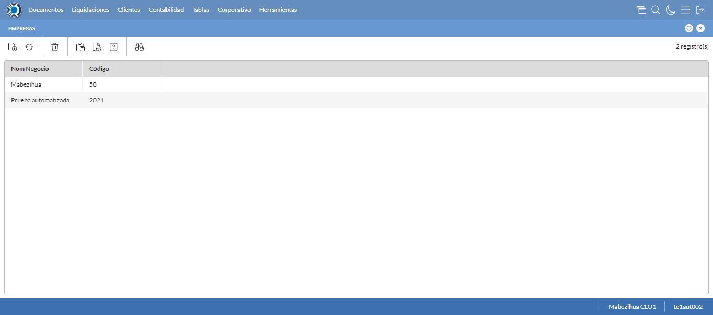
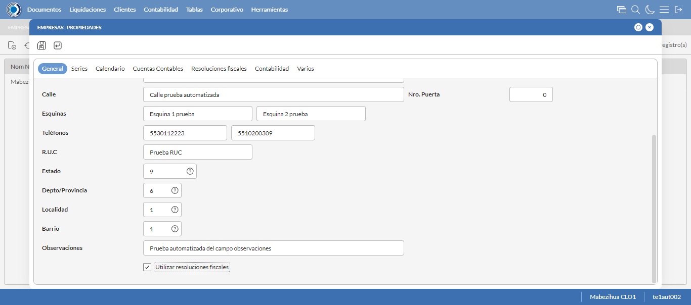
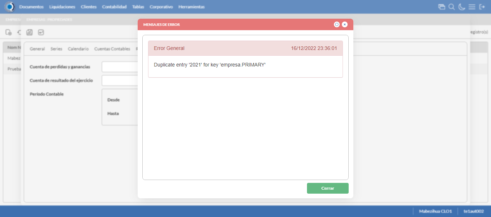
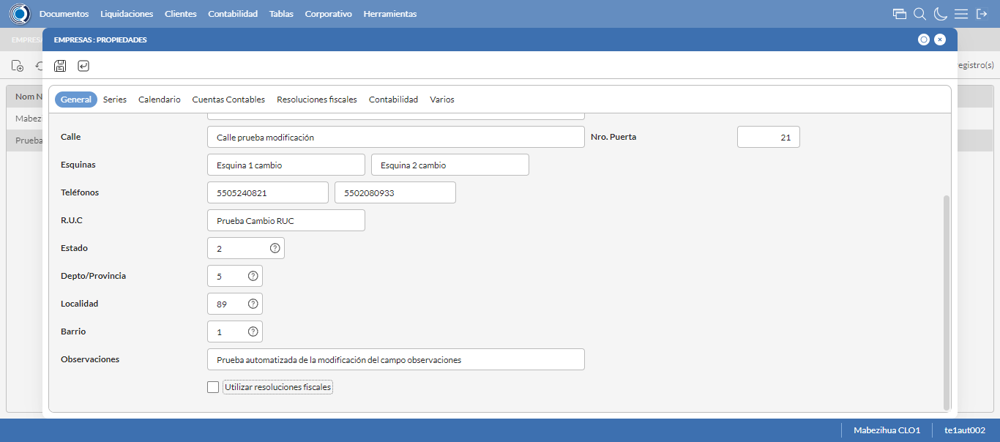
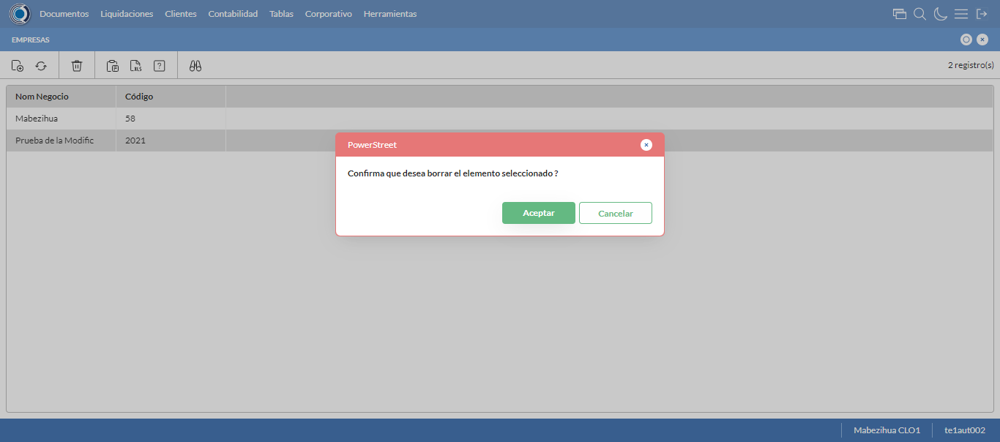

Desarrollado por : Area de Testing PWST
Fecha y hora de inicio : 2022-12-16 17:35:02
Duracion : 0:01:38.267696
Resultado : Total 8，Correctos 7 ，Errores 1 ，Taza de resultado 87.50%
Resumen 87.50% Errores 1 Fallidos 0 Correctos 7 Test realizados 8
| Caso de Prueba | Total | Correctos | Fallido | Error | Detalles | Captura del error |
| Empresas.Test: Escenario 1 de Empresas | 8 | 7 | 0 | 1 | Detalles | |
test |
ft1_1: 2022-12-16 17:35:04,076 - root - INFO - Se abre el chrome
2022-12-16 17:35:04,891 - root - INFO - Entra a la URL
2022-12-16 17:35:05,022 - root - INFO - Maximiza la pantalla
Traceback (most recent call last):
File "C:\Users\gerar\AppData\Local\Programs\Python\Python311\Lib\site-packages\selenium\webdriver\remote\switch_to.py", line 88, in frame
frame_reference = self._driver.find_element(By.ID, frame_reference)
^^^^^^^^^^^^^^^^^^^^^^^^^^^^^^^^^^^^^^^^^^^^^^^^^
File "C:\Users\gerar\AppData\Local\Programs\Python\Python311\Lib\site-packages\selenium\webdriver\remote\webdriver.py", line 861, in find_element
return self.execute(Command.FIND_ELEMENT, {"using": by, "value": value})["value"]
^^^^^^^^^^^^^^^^^^^^^^^^^^^^^^^^^^^^^^^^^^^^^^^^^^^^^^^^^^^^^^^^^
File "C:\Users\gerar\AppData\Local\Programs\Python\Python311\Lib\site-packages\selenium\webdriver\remote\webdriver.py", line 444, in execute
self.error_handler.check_response(response)
File "C:\Users\gerar\AppData\Local\Programs\Python\Python311\Lib\site-packages\selenium\webdriver\remote\errorhandler.py", line 249, in check_response
raise exception_class(message, screen, stacktrace)
selenium.common.exceptions.NoSuchElementException: Message: no such element: Unable to locate element: {"method":"css selector","selector":"[id="mainFrame"]"}
(Session info: chrome=108.0.5359.125)
Stacktrace:
Backtrace:
(No symbol) [0x00A1F243]
(No symbol) [0x009A7FD1]
(No symbol) [0x0089D04D]
(No symbol) [0x008CC0B0]
(No symbol) [0x008CC22B]
(No symbol) [0x008FE612]
(No symbol) [0x008E85D4]
(No symbol) [0x008FC9EB]
(No symbol) [0x008E8386]
(No symbol) [0x008C163C]
(No symbol) [0x008C269D]
GetHandleVerifier [0x00CB9A22+2655074]
GetHandleVerifier [0x00CACA24+2601828]
GetHandleVerifier [0x00AC8C0A+619850]
GetHandleVerifier [0x00AC7830+614768]
(No symbol) [0x009B05FC]
(No symbol) [0x009B5968]
(No symbol) [0x009B5A55]
(No symbol) [0x009C051B]
BaseThreadInitThunk [0x76347D69+25]
RtlInitializeExceptionChain [0x7731BB9B+107]
RtlClearBits [0x7731BB1F+191]
During handling of the above exception, another exception occurred:
Traceback (most recent call last):
File "C:\Users\gerar\AppData\Local\Programs\Python\Python311\Lib\site-packages\selenium\webdriver\remote\switch_to.py", line 91, in frame
frame_reference = self._driver.find_element(By.NAME, frame_reference)
^^^^^^^^^^^^^^^^^^^^^^^^^^^^^^^^^^^^^^^^^^^^^^^^^^^
File "C:\Users\gerar\AppData\Local\Programs\Python\Python311\Lib\site-packages\selenium\webdriver\remote\webdriver.py", line 861, in find_element
return self.execute(Command.FIND_ELEMENT, {"using": by, "value": value})["value"]
^^^^^^^^^^^^^^^^^^^^^^^^^^^^^^^^^^^^^^^^^^^^^^^^^^^^^^^^^^^^^^^^^
File "C:\Users\gerar\AppData\Local\Programs\Python\Python311\Lib\site-packages\selenium\webdriver\remote\webdriver.py", line 444, in execute
self.error_handler.check_response(response)
File "C:\Users\gerar\AppData\Local\Programs\Python\Python311\Lib\site-packages\selenium\webdriver\remote\errorhandler.py", line 249, in check_response
raise exception_class(message, screen, stacktrace)
selenium.common.exceptions.NoSuchElementException: Message: no such element: Unable to locate element: {"method":"css selector","selector":"[name="mainFrame"]"}
(Session info: chrome=108.0.5359.125)
Stacktrace:
Backtrace:
(No symbol) [0x00A1F243]
(No symbol) [0x009A7FD1]
(No symbol) [0x0089D04D]
(No symbol) [0x008CC0B0]
(No symbol) [0x008CC22B]
(No symbol) [0x008FE612]
(No symbol) [0x008E85D4]
(No symbol) [0x008FC9EB]
(No symbol) [0x008E8386]
(No symbol) [0x008C163C]
(No symbol) [0x008C269D]
GetHandleVerifier [0x00CB9A22+2655074]
GetHandleVerifier [0x00CACA24+2601828]
GetHandleVerifier [0x00AC8C0A+619850]
GetHandleVerifier [0x00AC7830+614768]
(No symbol) [0x009B05FC]
(No symbol) [0x009B5968]
(No symbol) [0x009B5A55]
(No symbol) [0x009C051B]
BaseThreadInitThunk [0x76347D69+25]
RtlInitializeExceptionChain [0x7731BB9B+107]
RtlClearBits [0x7731BB1F+191]
During handling of the above exception, another exception occurred:
Traceback (most recent call last):
File "C:\xampp\htdocs\versiones\automatizaciones\AutoPWST\01EMP\testCase\Empresas.py", line 30, in test
self.driver.switch_to.frame("mainFrame")
File "C:\Users\gerar\AppData\Local\Programs\Python\Python311\Lib\site-packages\selenium\webdriver\remote\switch_to.py", line 93, in frame
raise NoSuchFrameException(frame_reference)
selenium.common.exceptions.NoSuchFrameException: Message: mainFrame
|
|
||||
test_000: Ingresa a la base de datos |
pt1_2: 2022-12-16 17:35:08,096 - root - INFO - Escribe el usuario
2022-12-16 17:35:08,159 - root - INFO - Escribe la contraseña
2022-12-16 17:35:08,218 - root - INFO - Se dio clic en el boton ingresar
2022-12-16 17:35:08,912 - root - INFO - Ejecutar Enterprise
2022-12-16 17:35:12,952 - root - INFO - Cambia entre pestañas
|
|
||||
test_001: Abre menu y ejecuta pantalla |
pt1_3: 2022-12-16 17:35:24,252 - root - INFO - Abre la pantalla de Empresas
2022-12-16 17:35:24,801 - root - INFO - La pantalla ejecutada es Empresas
2022-12-16 17:35:24,802 - root - INFO - Captura: C:\xampp\htdocs\versiones\automatizaciones\AutoPWST\01EMP\report\img screen：20221216_17_35_24.png
2022-12-16 17:35:25,456 - root - INFO - Se da clic en el registro creado, para proceder a eliminarlo.
2022-12-16 17:35:26,015 - root - INFO - Se hace el cambio a la pestaña Resoluciones Fiscales para continuar con la eliminación del registro
2022-12-16 17:35:28,597 - root - INFO - Se da clic en el registro creado, para proceder a eliminarlo.
2022-12-16 17:35:28,641 - root - INFO - Se hace el cambio a la pestaña Series para continuar con la eliminación del registro
2022-12-16 17:35:29,735 - root - INFO - Se da doble click en el registro de series, para proceder a eliminarlo.
2022-12-16 17:35:30,298 - root - INFO - Se hace el cambio a la pestaña Coniguración Vias para continuar con la eliminación del registro
2022-12-16 17:35:31,393 - root - INFO - Se da clic en el registro de Configuración Vías, para proceder a modificarlo.
2022-12-16 17:35:31,450 - root - INFO - Se presiona el boton 'Eliminar', para eliminar el registro de Configuración Vías.
2022-12-16 17:35:31,604 - root - INFO - Se da clic en el boton Guardar; se debe modificar la informacion del registro Series.
2022-12-16 17:35:31,887 - root - INFO - Se da clic en el boton Guardar; se debe modificar la informacion del registro.
2022-12-16 17:35:32,452 - root - INFO - Se da clic en el registro creado, para proceder a eliminarlo.
2022-12-16 17:35:33,018 - root - INFO - Se hace el cambio a la pestaña Series para continuar con la eliminación del registro
2022-12-16 17:35:34,090 - root - INFO - Se da clic en el registro series, para proceder a eliminarlo.
2022-12-16 17:35:34,137 - root - INFO - Se presiona el boton 'Eliminar', para eliminar el registro de Series.
2022-12-16 17:35:34,262 - root - INFO - Se da clic en el boton Guardar; se debe modificar la informacion del registro.
2022-12-16 17:35:34,823 - root - INFO - Se da clic en el registro creado, para proceder a eliminarlo.
2022-12-16 17:35:34,871 - root - INFO - Se presiona el boton 'Eliminar', para eliminar el registro.
2022-12-16 17:35:35,443 - root - INFO - Se confirma el eliminado del registro
2022-12-16 17:35:35,622 - root - INFO - Se presiona el boton 'Refrescar', para crear un nuevo registro igual al anterior.
2022-12-16 17:35:37,689 - root - INFO - Se presiona el boton 'Nuevo', para crear un nuevo registro.
|
 | ||||
test_002: Abre la ventana de nuevo y crear un registro |
pt1_4: 2022-12-16 17:35:38,251 - root - INFO - Se abrio la pantalla para el ingreso de un registro nuevo.
2022-12-16 17:35:38,297 - root - INFO - Ingresa el codigo del nuevo registro
2022-12-16 17:35:38,423 - root - INFO - Ingresa la descripción del nuevo registro
2022-12-16 17:35:38,485 - root - INFO - Ingresa el codigo alternativo del nuevo registro
2022-12-16 17:35:38,549 - root - INFO - Ingresa el codigo GLN del nuevo registro
2022-12-16 17:35:38,626 - root - INFO - Ingresa la Razón Social del nuevo registro
2022-12-16 17:35:38,708 - root - INFO - Ingresa la calle del nuevo registro
2022-12-16 17:35:38,781 - root - INFO - Ingresa la esquina 1 del nuevo registro
2022-12-16 17:35:38,857 - root - INFO - Ingresa la esquina 2 del nuevo registro
2022-12-16 17:35:38,924 - root - INFO - Ingresa el Telefono 1 del nuevo registro
2022-12-16 17:35:38,984 - root - INFO - Ingresa el Telefono 2 del nuevo registro
2022-12-16 17:35:39,054 - root - INFO - Ingresa el ruc del nuevo registro
2022-12-16 17:35:39,943 - root - INFO - Se dió doble click en el registro de Estado.
2022-12-16 17:35:41,079 - root - INFO - Se dió doble click en el registro de Depto/Provincia.
2022-12-16 17:35:42,180 - root - INFO - Se dió doble click en el registro de Localidad.
2022-12-16 17:35:45,241 - root - INFO - Se dió doble click en el registro de Barrio.
2022-12-16 17:35:45,380 - root - INFO - Ingresa las Observaciones del nuevo registro
2022-12-16 17:35:45,426 - root - INFO - Se dió click en el checkbox Resoluciones Fiscales.
2022-12-16 17:35:45,427 - root - INFO - Captura: C:\xampp\htdocs\versiones\automatizaciones\AutoPWST\01EMP\report\img screen：20221216_17_35_45.png
2022-12-16 17:35:45,593 - root - INFO - Ingresa el Num de la puerta del nuevo registro
2022-12-16 17:35:45,637 - root - INFO - Se hace el cambio a la pestaña Series para continuar con el registro nuevo
2022-12-16 17:35:46,208 - root - INFO - Se presiona el boton 'Nuevo', para crear un nuevo registro de Series.
2022-12-16 17:35:46,792 - root - INFO - Ingresa el Codigo del nuevo registro
2022-12-16 17:35:46,899 - root - INFO - Ingresa la Descripcion del nuevo registro
2022-12-16 17:35:46,966 - root - INFO - Ingresa el Codigo alternativo del nuevo registro
2022-12-16 17:35:47,010 - root - INFO - Se hace el cambio a la pestaña Configuración Vias para continuar con el registro nuevo
2022-12-16 17:35:47,588 - root - INFO - Se presiona el boton 'Nuevo', para crear un nuevo registro de Configuración Vias.
2022-12-16 17:35:48,174 - root - INFO - Ingresa el Tipo Documento del nuevo registro
2022-12-16 17:35:48,274 - root - INFO - Ingresa las Vias Backoffice del nuevo registro
2022-12-16 17:35:48,347 - root - INFO - Ingresa las Vias Mobile del nuevo registro
2022-12-16 17:35:48,432 - root - INFO - Ingresa la Descripción Vias del nuevo registro
2022-12-16 17:35:48,788 - root - INFO - Se presiona el boton 'Guardar', para guardar el registro de Configuracion Vias .
2022-12-16 17:35:49,225 - root - INFO - Se presiona el boton 'Guardar', para guardar el registro de Serie.
2022-12-16 17:35:49,498 - root - INFO - Se hace el cambio a la pestaña Calendario para continuar con el registro nuevo
2022-12-16 17:35:50,088 - root - INFO - Se dió click en el checkbox Lunes.
2022-12-16 17:35:50,137 - root - INFO - Se dió click en el checkbox Martes.
2022-12-16 17:35:50,194 - root - INFO - Se dió click en el checkbox Miercoles.
2022-12-16 17:35:50,243 - root - INFO - Se dió click en el checkbox Jueves.
2022-12-16 17:35:50,292 - root - INFO - Se dió click en el checkbox Viernes.
2022-12-16 17:35:50,342 - root - INFO - Se dió click en el checkbox Sabado.
2022-12-16 17:35:50,387 - root - INFO - Se hace el cambio a la pestaña Contabilidad para continuar con el registro nuevo
2022-12-16 17:35:51,022 - root - INFO - Ingresa la fecha Desde del nuevo registro
2022-12-16 17:35:51,139 - root - INFO - Ingresa la fecha Hasta del nuevo registro
2022-12-16 17:35:51,188 - root - INFO - Se da clic en el boton Guardar; se debe crear un nuevo registro.
|
 | ||||
test_003: Repetir el registro creado anteriormente |
pt1_5: 2022-12-16 17:35:51,554 - root - INFO - Se presiona el boton 'Refrescar', para crear un nuevo registro igual al anterior.
2022-12-16 17:35:53,611 - root - INFO - Se presiona el boton 'Nuevo', para crear un nuevo registro igual al anterior.
2022-12-16 17:35:54,167 - root - INFO - Se abrio la pantalla para el ingreso de un registro nuevo.
2022-12-16 17:35:54,210 - root - INFO - Ingresa el codigo del nuevo registro
2022-12-16 17:35:54,330 - root - INFO - Ingresa la descripción del nuevo registro
2022-12-16 17:35:54,393 - root - INFO - Ingresa el codigo alternativo del nuevo registro
2022-12-16 17:35:54,459 - root - INFO - Ingresa el codigo GLN del nuevo registro
2022-12-16 17:35:54,535 - root - INFO - Ingresa la Razón Social del nuevo registro
2022-12-16 17:35:54,617 - root - INFO - Ingresa la calle del nuevo registro
2022-12-16 17:35:54,688 - root - INFO - Ingresa la esquina 1 del nuevo registro
2022-12-16 17:35:54,777 - root - INFO - Ingresa la esquina 2 del nuevo registro
2022-12-16 17:35:54,841 - root - INFO - Ingresa el Telefono 1 del nuevo registro
2022-12-16 17:35:54,906 - root - INFO - Ingresa el Telefono 2 del nuevo registro
2022-12-16 17:35:54,972 - root - INFO - Ingresa el ruc del nuevo registro
2022-12-16 17:35:55,843 - root - INFO - Se dió doble click en el registro de Estado.
2022-12-16 17:35:56,948 - root - INFO - Se dió doble click en el registro de Depto/Provincia.
2022-12-16 17:35:57,983 - root - INFO - Se dió doble click en el registro de Localidad.
2022-12-16 17:35:59,032 - root - INFO - Se dió doble click en el registro de Barrio.
2022-12-16 17:35:59,263 - root - INFO - Ingresa las Observaciones del nuevo registro
2022-12-16 17:35:59,488 - root - INFO - Se dió click en el checkbox Resoluciones Fiscales.
2022-12-16 17:35:59,570 - root - INFO - Ingresa el Num de la puerta del nuevo registro
2022-12-16 17:35:59,618 - root - INFO - Se hace el cambio a la pestaña Contabilidad para continuar con el registro nuevo
2022-12-16 17:36:00,230 - root - INFO - Ingresa la fecha Desde del nuevo registro
2022-12-16 17:36:00,325 - root - INFO - Ingresa la fecha Hasta del nuevo registro
2022-12-16 17:36:00,391 - root - INFO - Se da clic en el boton Guardar; NO se debe crear un nuevo registro.
2022-12-16 17:36:02,392 - root - INFO - Captura: C:\xampp\htdocs\versiones\automatizaciones\AutoPWST\01EMP\report\img screen：20221216_17_36_02.png
2022-12-16 17:36:02,538 - root - INFO - Se presiona el boton 'Cerrar', para cerrar el mensaje de duplicidad de llave primaria
2022-12-16 17:36:02,644 - root - INFO - Se presiona el boton 'Cerrar', para cerrar la ventana
|
 | ||||
test_004: Modificar el registro |
pt1_6: 2022-12-16 17:36:02,757 - root - INFO - Se presiona el boton 'Refrescar', para proceder a modificar el registro.
2022-12-16 17:36:05,333 - root - INFO - Se da clic en el registro creado, para proceder a modificarlo.
2022-12-16 17:36:06,014 - root - INFO - Se modifica el contenido del campo Descripción
2022-12-16 17:36:06,093 - root - INFO - Se modifica el contenido del campo Codigo Alternativo
2022-12-16 17:36:06,191 - root - INFO - Se modifica el contenido del campo Codigo GLN
2022-12-16 17:36:06,304 - root - INFO - Se modifica el contenido del campo Razón Social
2022-12-16 17:36:06,407 - root - INFO - Se modifica el contenido del campo Calle
2022-12-16 17:36:06,494 - root - INFO - Se modifica el contenido del campo Esquina 1
2022-12-16 17:36:06,583 - root - INFO - Se modifica el contenido del campo Esquina 2
2022-12-16 17:36:06,664 - root - INFO - Se modifica el contenido del campo telefono 1
2022-12-16 17:36:06,744 - root - INFO - Se modifica el contenido del campo telefono 2
2022-12-16 17:36:06,832 - root - INFO - Se modifica el contenido del campo RUC
2022-12-16 17:36:07,714 - root - INFO - Se dió doble click en el registro de Estado.
2022-12-16 17:36:08,811 - root - INFO - Se dió doble click en el registro de Depto/Provincia.
2022-12-16 17:36:10,115 - root - INFO - Se dió doble click en el registro de Localidad.
2022-12-16 17:36:11,221 - root - INFO - Se dió doble click en el registro de Barrio.
2022-12-16 17:36:11,451 - root - INFO - Se modifica el contenido del campo Observaciones
2022-12-16 17:36:11,504 - root - INFO - Se dió click en el checkbox Resoluciones Fiscales.
2022-12-16 17:36:11,504 - root - INFO - Captura: C:\xampp\htdocs\versiones\automatizaciones\AutoPWST\01EMP\report\img screen：20221216_17_36_11.png
2022-12-16 17:36:11,694 - root - INFO - Se modifica el contenido del campo Num de Puerta
2022-12-16 17:36:11,745 - root - INFO - Se hace el cambio a la pestaña Series para continuar con la modificación del registro
2022-12-16 17:36:12,831 - root - INFO - Se da clic en el registro de Series, para proceder a modificarlo.
2022-12-16 17:36:13,495 - root - INFO - Se modifica el contenido del campo Descripción
2022-12-16 17:36:13,596 - root - INFO - Se modifica el contenido del campo Codigo Alternativo
2022-12-16 17:36:13,654 - root - INFO - Se hace el cambio a la pestaña Configuración de Vías para continuar con la modificación del registro
2022-12-16 17:36:14,773 - root - INFO - Se da clic en el registro de Configuración Vías, para proceder a modificarlo.
2022-12-16 17:36:15,542 - root - INFO - Se modifica el contenido del campo Tipo Documento
2022-12-16 17:36:15,651 - root - INFO - Se modifica el contenido del campo Vías Backoffice
2022-12-16 17:36:15,762 - root - INFO - Se modifica el contenido del campo Vías Mobile
2022-12-16 17:36:16,345 - root - INFO - Se modifica el contenido del campo Descripción
2022-12-16 17:36:16,392 - root - INFO - Se presiona el boton 'Guardar', para guardar la modificación del registro de Configuración Vías.
2022-12-16 17:36:16,689 - root - INFO - Se presiona el boton 'Guardar', para guardar la modificación del registro Series.
2022-12-16 17:36:16,909 - root - INFO - Se hace el cambio a la pestaña Calendario para continuar con la modificación del registro
2022-12-16 17:36:17,479 - root - INFO - Se dió click en el checkbox Lunes.
2022-12-16 17:36:17,529 - root - INFO - Se dió click en el checkbox Miercoles.
2022-12-16 17:36:17,581 - root - INFO - Se dió click en el checkbox Sabado.
2022-12-16 17:36:17,628 - root - INFO - Se hace el cambio a la pestaña Resoluciones Fiscales para continuar con la modificación del registro
2022-12-16 17:36:18,212 - root - INFO - Se presiona el boton 'Nuevo', para crear un nuevo registro de Resoluciones Fiscales.
2022-12-16 17:36:19,668 - root - INFO - Se dió doble click en el registro de Serie.
2022-12-16 17:36:19,872 - root - INFO - Ingresa el Num de la puerta del nuevo registro
2022-12-16 17:36:19,964 - root - INFO - Ingresa el Rango Inicio del nuevo registro
2022-12-16 17:36:20,026 - root - INFO - Ingresa el Rango Fin del nuevo registro
2022-12-16 17:36:20,062 - root - INFO - Se da clic en el boton Guardar; se debe guardar el registro de Resolución Fiscal.
2022-12-16 17:36:20,339 - root - INFO - Se da clic en el boton Guardar; se debe modificar la informacion del registro.
|
 | ||||
test_005: Eliminar el registro creado |
pt1_7: 2022-12-16 17:36:20,767 - root - INFO - Se presiona el boton 'Refrescar', para proceder a eliminar el registro.
2022-12-16 17:36:23,347 - root - INFO - Se da clic en el registro creado, para proceder a eliminarlo.
2022-12-16 17:36:23,922 - root - INFO - Se hace el cambio a la pestaña Resoluciones Fiscales para continuar con la eliminación del registro
2022-12-16 17:36:25,005 - root - INFO - Se da clic en el registro en el Registro de Resoluciones Fiscales, para proceder a modificarlo.
2022-12-16 17:36:25,054 - root - INFO - Se presiona el boton 'Eliminar', para eliminar el registro de Resoluciones Fiscales.
2022-12-16 17:36:25,170 - root - INFO - Se da clic en el boton Guardar; se debe modificar la informacion del registro.
2022-12-16 17:36:25,755 - root - INFO - Se da clic en el registro creado, para proceder a eliminarlo.
2022-12-16 17:36:26,331 - root - INFO - Se hace el cambio a la pestaña Series para continuar con la eliminación del registro
2022-12-16 17:36:27,415 - root - INFO - Se da doble click en el registro de series, para proceder a eliminarlo.
2022-12-16 17:36:27,981 - root - INFO - Se hace el cambio a la pestaña Coniguración Vias para continuar con la eliminación del registro
2022-12-16 17:36:29,049 - root - INFO - Se da clic en el registro de Configuración Vías, para proceder a modificarlo.
2022-12-16 17:36:29,134 - root - INFO - Se presiona el boton 'Eliminar', para eliminar el registro de Configuración Vías.
2022-12-16 17:36:29,287 - root - INFO - Se da clic en el boton Guardar; se debe modificar la informacion del registro Series.
2022-12-16 17:36:29,497 - root - INFO - Se da clic en el boton Guardar; se debe modificar la informacion del registro.
2022-12-16 17:36:30,066 - root - INFO - Se da clic en el registro creado, para proceder a eliminarlo.
2022-12-16 17:36:30,644 - root - INFO - Se hace el cambio a la pestaña Series para continuar con la eliminación del registro
2022-12-16 17:36:31,716 - root - INFO - Se da clic en el registro series, para proceder a eliminarlo.
2022-12-16 17:36:31,764 - root - INFO - Se presiona el boton 'Eliminar', para eliminar el registro de Series.
2022-12-16 17:36:31,952 - root - INFO - Se da clic en el boton Guardar; se debe modificar la informacion del registro.
2022-12-16 17:36:32,535 - root - INFO - Se da clic en el registro creado, para proceder a eliminarlo.
2022-12-16 17:36:32,585 - root - INFO - Se presiona el boton 'Eliminar', para eliminar el registro.
2022-12-16 17:36:34,587 - root - INFO - Captura: C:\xampp\htdocs\versiones\automatizaciones\AutoPWST\01EMP\report\img screen：20221216_17_36_34.png
2022-12-16 17:36:34,727 - root - INFO - Se confirma el eliminado del registro
2022-12-16 17:36:34,900 - root - INFO - Se presiona el boton 'Refrescar', para verificar si el registro ha sido eliminado.
2022-12-16 17:36:36,958 - root - INFO - Se presiona el boton 'Cerrar', para cerrar la pantalla de Empresas.
|
 | ||||
test_006: Cerrar_Navegador |
pt1_8: 2022-12-16 17:36:41,267 - root - INFO - Se cierra chrome
|
|
||||
| Caso de prueba | 8 | 7 | 0 | 1 | Taza de resultado：87.50% | |